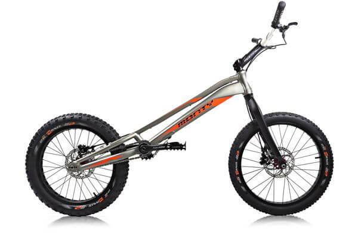

Стрит (Street) - триал
или «урбан – триал» - преодоление препятствий в городе в виде бордюров, труб, парапетов, заборов, лестниц, часто с исполнением трюков.
Триал (Trial) - преодоление таких препятствий, как парапеты, доски, камни, рвы, брёвна с исполнением трюков.
На специальных
, искусственно созданных
трассах
- для зачётных соревнований, все параметры препятствий хорошо известны заранее.
Участники могут использовать как Стрит, так и Триал байки.
Разновидность байков по видам триала
Диаметр колёс байка
20"
24"
26"
Стрит (Street)
Триал (Trial)
На специальных трассах

Большинство триалистов в Тюмени выбрали
Триал байки.